Langkah 1

Buka menu ESS di POSMAIN
Buka menu ESS di POSMAIN

Klik CARA PENGGUNAAN

Klik ikon save di pojok kanan atas
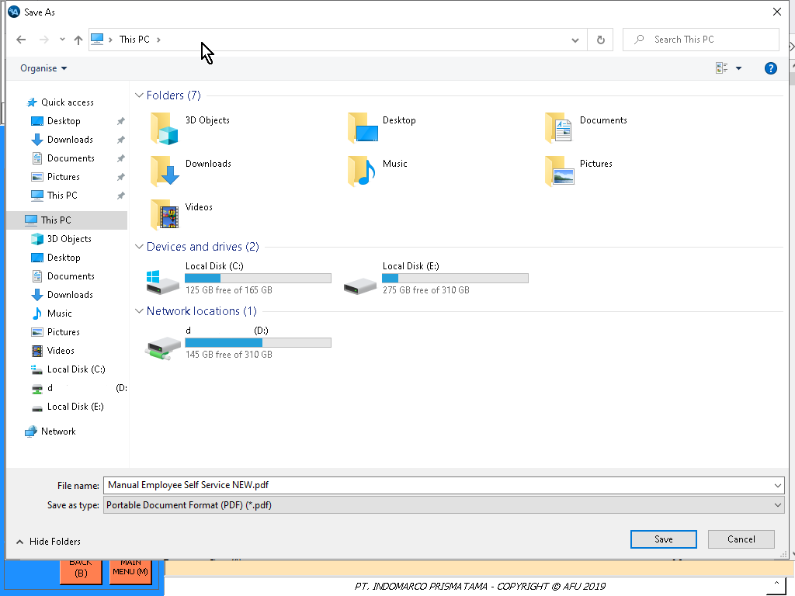
Klik kotak yg ada teks This PC

Ketik gpedit.msc lalu enter
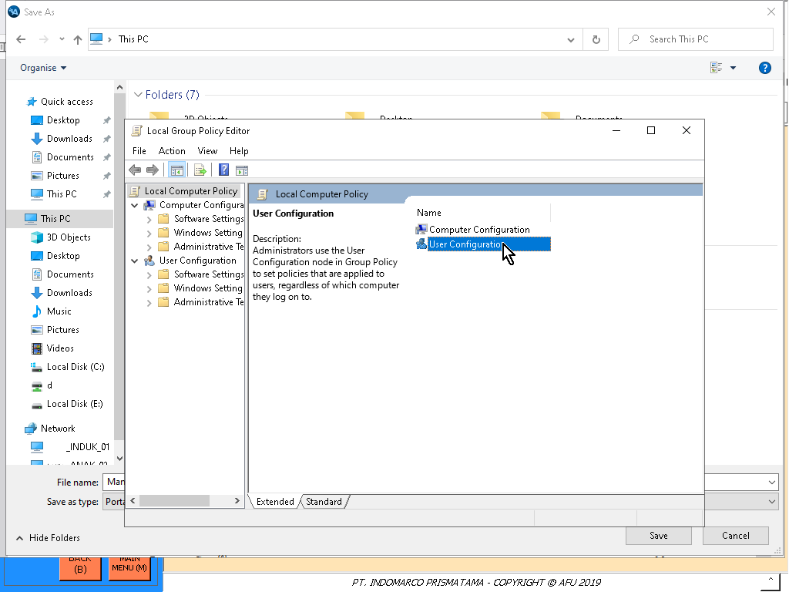
Pilih User Configuration
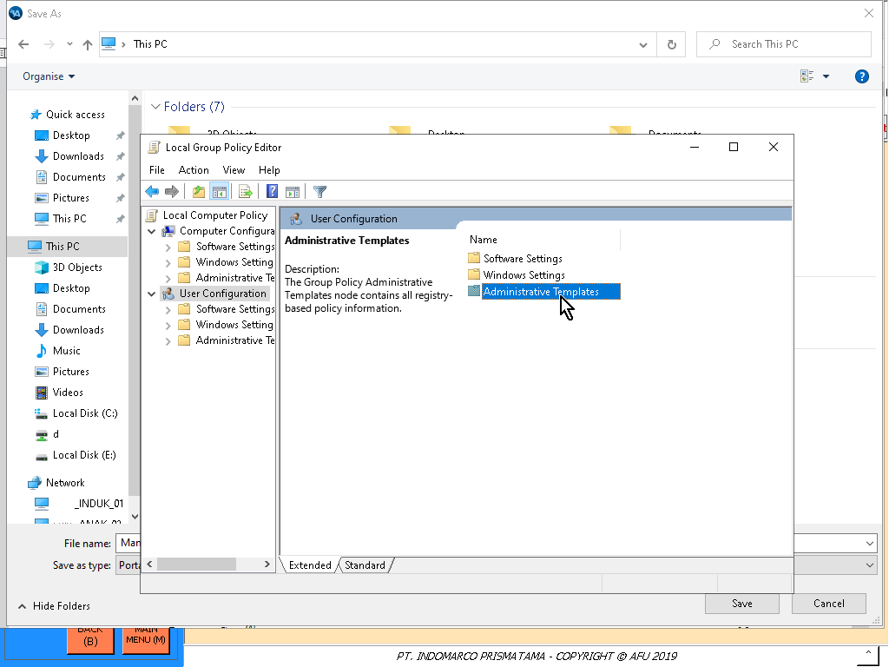
Pilih Administrative Templates
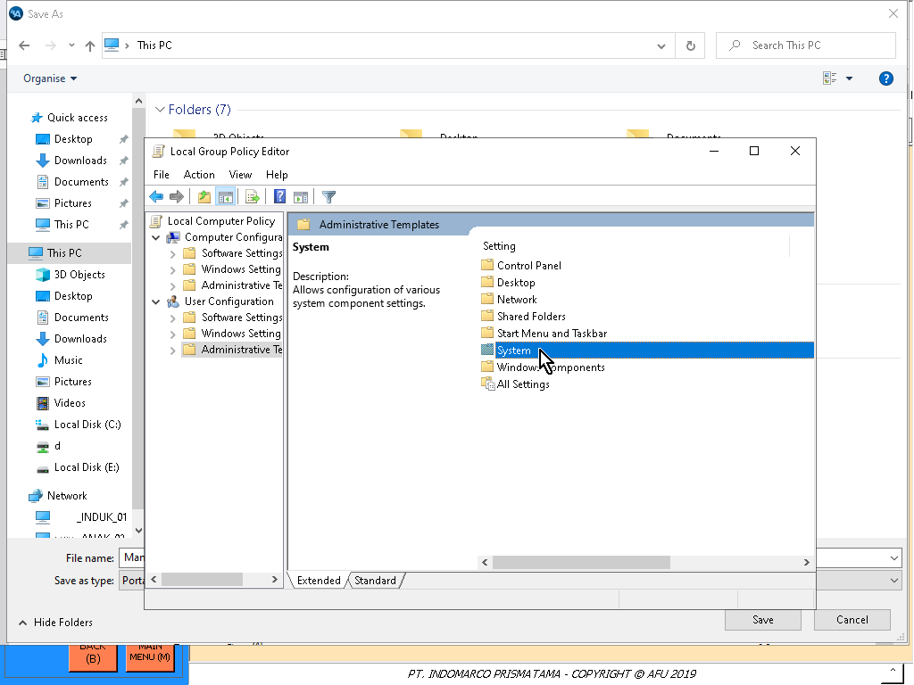
Pilih System
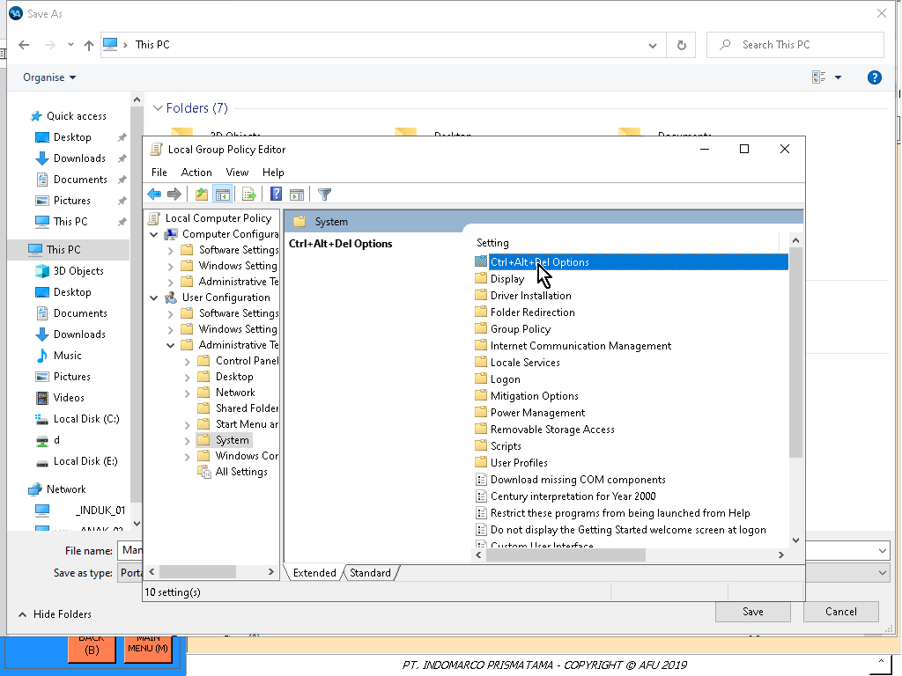
Pilih Ctrl+Alt+Del Options
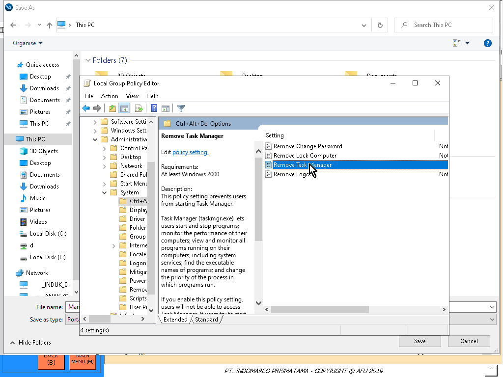
Pilih Remove Task Manager
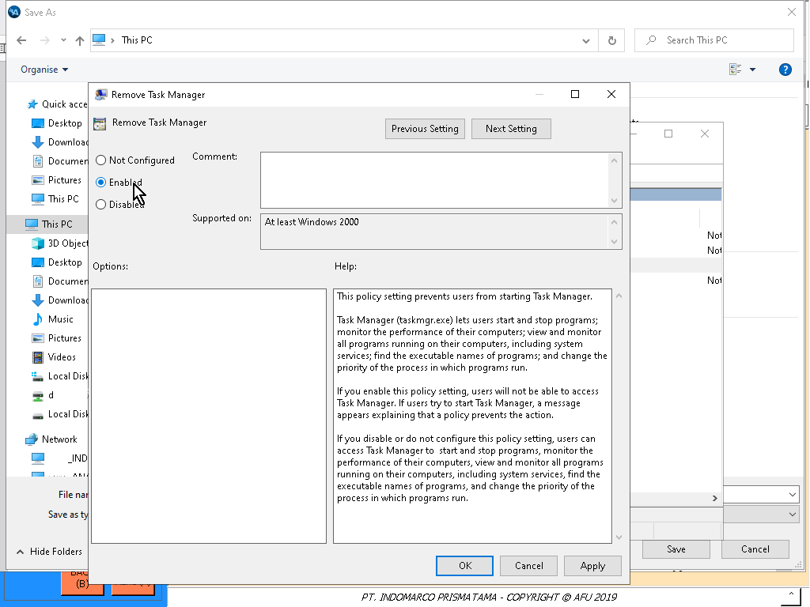
Pilih Enabled
Lalu pilih Disabled
Klik Apply
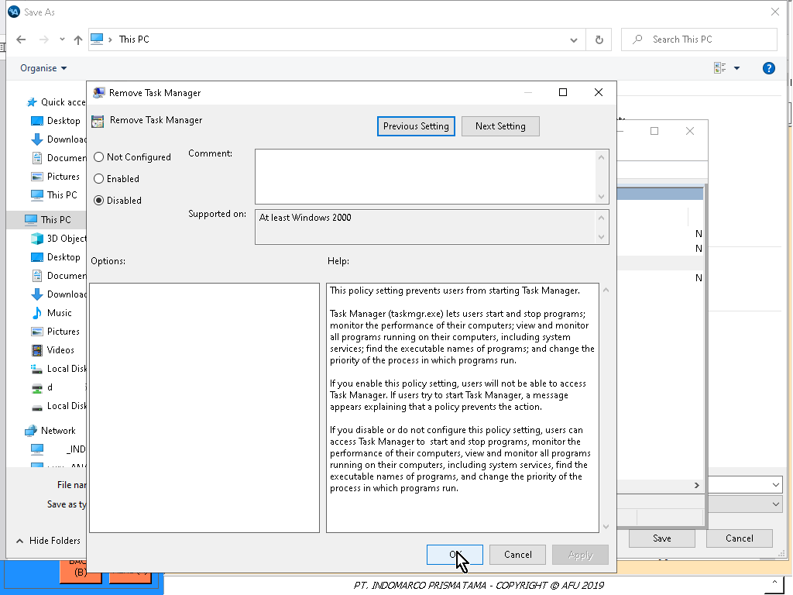
Lalu klik OK
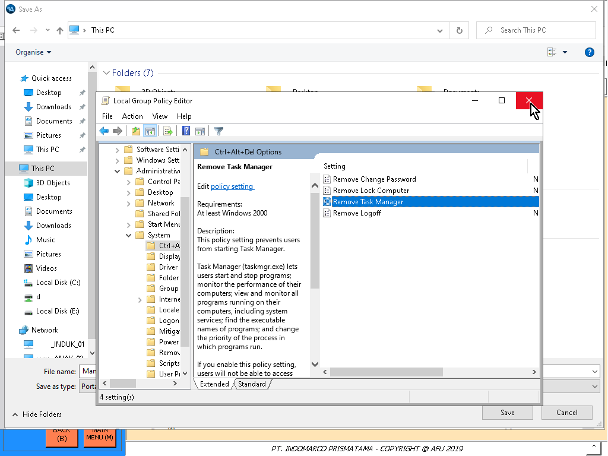
Close app gpedit
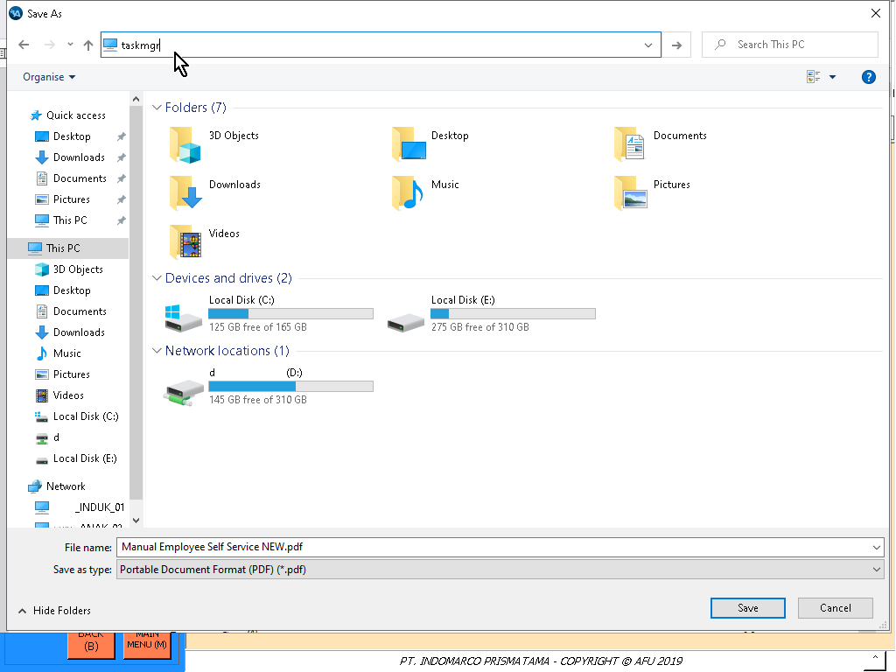
Ketik taskmgr di kotak yg ada teks This PC lalu enter
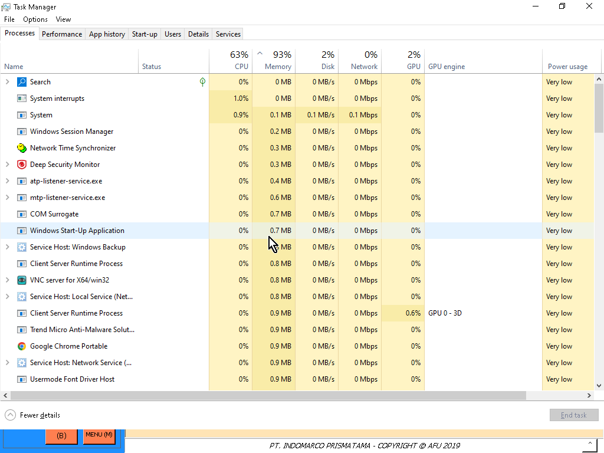
Task Manager berhasil terbuka